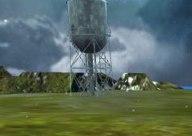
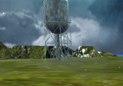

This gaming experience lets you become the savior of a virtual town, by helping it recover from a water
crisis. Goal of the game is managing to find a system design that exploits the town's available resources wisely and meets the
respective irrigation and household non potable demands.
Rainwater falling on the houses' roofs and the town's impermeable surfaces (pavements, streets, yards, etc.)
is collected. The roofs' rainwater is stored in Tanks Νο1 and is primarily used for household non potable uses.
The surface runoff from the impermeable surfaces is stored in Tanks Νο2, where it also meets the rainwater of any probable overflow
οf Tanks Νο1. Rainwater of Tanks Νο2 is used for irrigation as well as for storage in the subsurface (Aquifer) through artificial recharge.
Additional rainwater is collected via Bioswale systems (open-channel linear drainage systems) from the town's fields and reserved in
Τanks Νο3. This water is also used for irrigation, while any probable overflow of Tanks No3 heads to the subsurface through
artificial recharge. Water can be recovered from the subsurface for irrigation.


 
